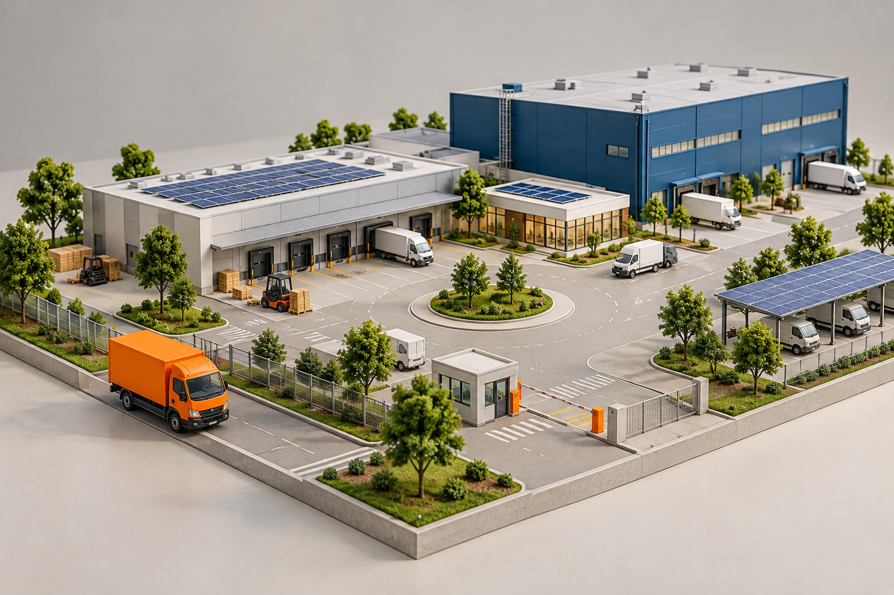

IMAGE TRANSFORM / 01
同じ画像を、配置に合わせて変える
元の画像の縦横比・非等倍の伸縮・回転を比較
元の縦横比 3:2

縦横比を保って縮小
横方向へ伸縮
縦方向へ伸縮
画像を20°回転
親要素を−16°回転
物流拠点 A
IMAGE TRANSFORM / 02
反転と、表示領域に合わせた切り抜き
左右に非対称な被写体で、反転・切り抜き位置の違いを確認
左右反転 scaleX(−1)
上下反転 scaleY(−1)
cover / 中央を基準に切り抜く
cover / 左側のトラックを残す
contain / 全体を収める
cover / 上側の倉庫を残す
IMAGE TRANSFORM / 03
輪郭・透明度・重なりを保つ
写真と、後から編集する文字・枠・注釈を組み合わせる
角丸 border-radius:24px
円形の切り抜き
画像の透明度45%と背景
画像同士の重なりと順序
写真の上に編集可能な文字と枠
搬入口を再配置
写真と図形・矢印の注釈
新しい搬入動線
IMAGE TRANSFORM / 04
写真だけをぼかし、文字は鮮明に保つ
同じ写真にCSS filter: blurを指定し、追加の文字は別要素として重ねる
原画像 / ぼかしなし
弱いぼかし filter:blur(3px)
強いぼかし filter:blur(8px)
ぼかした写真 + 鮮明な文字・枠
次の物流拠点へ
IMAGE TRANSFORM / 05
重なり順は、DOMとz-indexで決まる
画像・図形・文字の順序と、親のスタッキングコンテキストを比較
DOM順：画像 → 図形 → 画像 → 枠 → 文字
最後の文字が最前面
DOM順よりz-indexを優先
緑4 ＞ 写真3 ＞ 黄1
親Bの2 ＞ 親Aの1（子が999でも）
親A内の写真 z-index:999
親Bが前面 z-index:2
親z-index:0内の負値は、親背景より手前
写真−1も親背景の前面